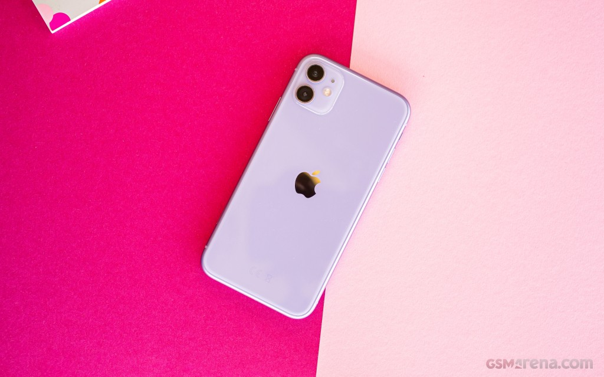

Score best phone in 2019
Xiaomi mi9
The Mobile World Congress is upon us and it's shaping to be one of the most exciting ones in recent years.
But
the first flagship for year 2019 is now out and it's not coming from Spain but China instead as
the Xiaomi Mi 9
just landed.
The Mi 9 is the company's first smartphone to pack Qualcomm's latest chipset - the Snapdragon 855. The new
processor and graphics are pretty exciting even if 5G isn't part of the package.
Samsung Galaxy S10

Step by step and year by year, we're now at 10 - the Samsung Galaxy S-series have matured over the past
decade
with big and incremental upgrades alike bringing us closer to that elusive 'perfect smartphone'.The
Galaxy S10
is by definition the best one ever, so let's see just how good the best is.
There's little to separate the S10 from the S10+ we had a closer look at last week, and most of it is a
matter
of scale. The S10's got a smaller display than the Plus at 6.1 inches - the 0.3-inch spacing Samsung
instituted
between the four S10s. And then with a smaller display a smaller battery is in order, the 3,400mAh capacity
a
slightly bigger downgrade than the diagonal. And that's about it - unless you absolutely insist on 12GB of
RAM
and 1TB of storage, an option only available in Plus size.
Iphone 11
The iPhone XR was the first commercial success that came on the second attempt for making a more affordable
iPhone. The iPhone 5c failed to impress in 2013, and we thought we'd never see the maker give this idea
another
try. Well, last year the iPhone XR was more than well received being the best selling iPhone of the trio, so
this year we welcome its sequel - the iPhone 11.
The iPhone XR was indeed a cheaper, toned-down version of the XS generation, with an LCD screen, one camera
short, and promised some excellent battery endurance. Well, when we say cheaper, we are not saying cheap, as
those words mean something different in Apple's universe.